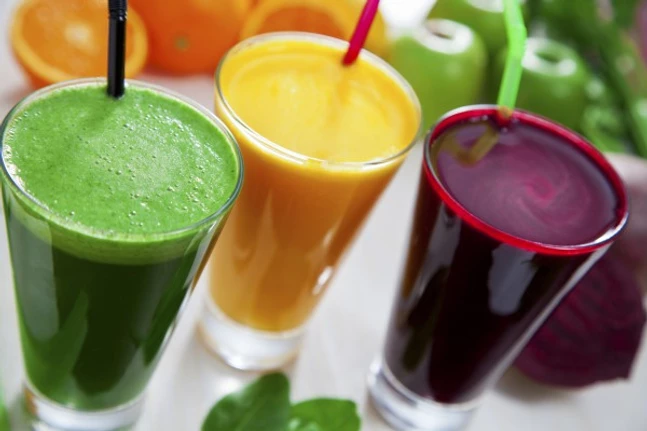
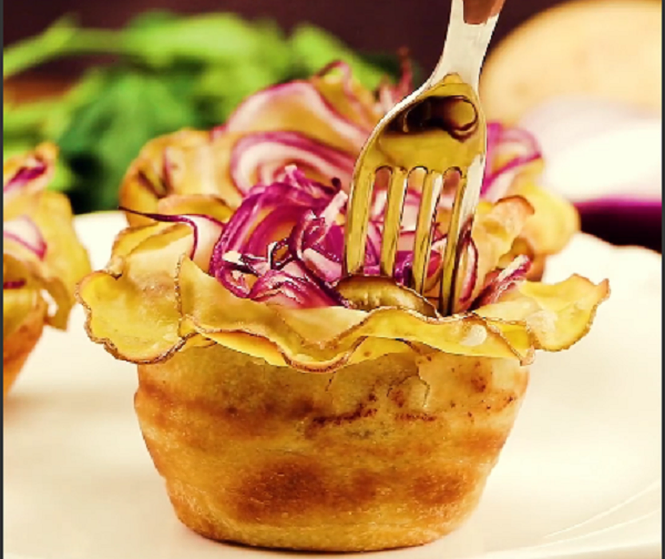

Come preparare cocktail a casa1

I cocktail sono un valido aiuto per perdere peso. Aiutano ad
accelerare
il metabolismo, migliorare le condizioni della pelle e anche stimolare la rottura dello strato
grasso.
È
necessario avvicinarsi in modo completo: praticare sport, mangiare bene e utilizzare tutti i tipi di
metodi aggiuntivi, comprese le bevande salutari. Come preparare cocktail brucia grassi a casa –
leggi
nel nostro materiale. Cocktail alla cannella e al miele...
Pertanto, consiglio di non usare il pane di lievito di farina pura altamente raffinata, in cui non
ci
sono vitamine, minerali o fibre alimentari. E sostituisci con pane integrale.
Posso mangiare prodotti da forno?
Ai funghi termofili non utili, che vengono utilizzati per cuocere il pane, la margarina o la
diffusione vengono aggiunti alla farina bianca raffinata. Gli spread contengono agenti

Pertanto, consiglio di non usare il pane di lievito di farina pura altamente raffinata, in cui non
ci
sono vitamine, minerali o fibre alimentari. E sostituisci con pane integrale.